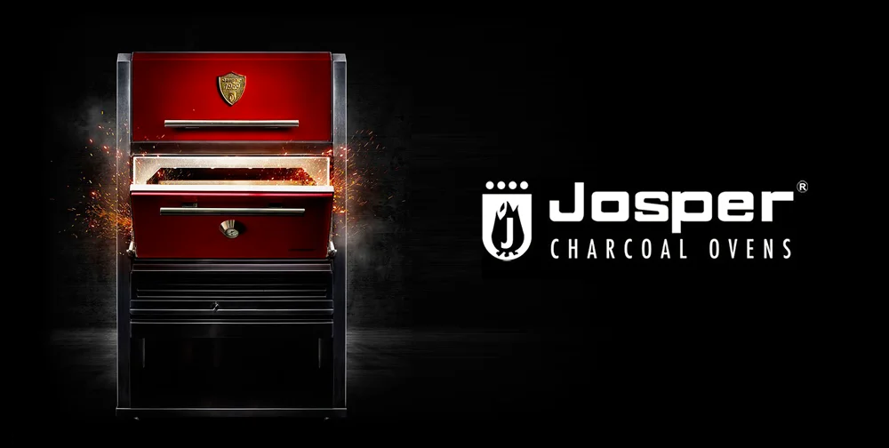

Dining
Dining
ファームトゥテーブル — 淡路島の恵み
The Grill
JOSPER®
日本初導入 — 世界一のBBQシェフ監修
炭と薪の二重の炎が、食材の旨味を閉じ込める。密閉オーブン内の独自対流が、外はカリッと、内はジューシーな食感を生み出す。この哲学こそ、THE BLESSのダイニングの核心。
Barcelona, 1969 — Born from Fire
1969
創業年 / Founded
50+
年の革新 / Years
No.1
日本初導入 / Japan First
9
品コース / Course
Why JOSPER®?
The Science of Fire
普通のグリルとは根本的に異なる。JOSPER®は密閉構造により、炭火の熱を三次元で食材に届ける唯一の調理器具。

-
01
Sealed Convection 密閉構造が熱対流を最大化。炭火の遠赤外線が食材の内部まで均一に届く。
-
02
Pure Charcoal Only ガス・電気を一切使わない。炭のみが持つ純粋な熱と香りが、素材を引き立てる。
-
03
Perfect Maillard Reaction 超高温（300℃超）でのメイラード反応が、比類なき焦げ目と旨味の凝縮を実現。
-
04
Productivity & Precision プロの厨房でのみ扱える精密な温度制御。世界50カ国以上の星付きレストランで採用。
Our Philosophy

Fire & Land
炎と大地JOSPER®グリル——世界で唯一、密閉型薪炭オーブンとグリルを一体化したマシン。日本初導入のこの炎が、淡路島の食材に息を吹き込む。

No Gas.
No Electric.
炭のみ。それが JOSPER® の哲学。
Wine Cellar


Wine Cellar
600本以上のセレクションロマネ・コンティ、ジャック・セロス、サロン——世界の至宝が、あなたの夜を彩る。
- Romanée-Conti — ロマネ・コンティ
- Jacques Selosse — ジャック・セロス
- Salon — サロン
- 淡路島クラフトビール
- 自家製テキーラ梅酒
- オリジナルジン


Begin Your Journey
特別な体験をご予約ください
Reserve Now